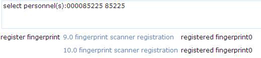
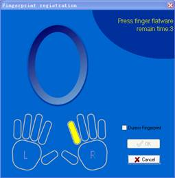
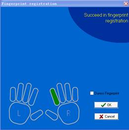

Personnel management
Add personnel
Click [Personnel] - [Personnel] - [Add] to show personnel profile edit interface.
The fields are as follows:
Personnel number: By default, the length shall not exceed 9 digits. A number with a length of less than 9 digits will be preceded with 0 automatically to complete 9 digits. To use a longer number, the user can find units\adms\attsite.inifile under the installation directory, open it and change the 9 in PIN_WIDTH=9 into another number (less than 16 digits and less than the device support max digits). For example, the access control panel supports 9 digits at most, so the personnel number need to be less than 9 digits. Numbers can not be repeated. Click [Verify] to see if it is repeated or not;
Department: Select from the pull-down menu and click [OK]. If the department was not set previously, you can only select the default [Company Name] department;
ID card number: Repetition is not allowed. Click [Verify] to check repetition. 15-digit and 18-digit ID card numbers are supported;
Register fingerprint: Register personnel fingerprint for access control or attendance use. For details, see register fingerprint in 5.2.2 Personnel Maintenance;
Password: Set personnel password. A black-and-white attendance machine supports only 5-digit passwords, a color attendance machine supports 8-digit passwords, and an access control panel only supports 6-digit passwords. If a password exceeds the specified length, the system will truncate it automatically;
Password: Set personnel password. An access control panel only supports 6-digit passwords. If a password exceeds the specified length, the system will truncate it automatically.
If you need to modify the password, please clear the old password in the box and input the new one;
Password: Set personnel password. A black-and-white attendance machine supports only 5-digit passwords, a color attendance machine supports 8-digit passwords. If a password exceeds the specified length, the system will truncate it automatically;
Personal photo: The best size is 120×140 pixels, for saving space. For details, see upload personal photo in Personnel Maintenance;
Employment date: By default it is the current date.
The employment date will serve as the attendance calculation start date. Attendance records prior to this date will not be counted in the statistical results.
Register Fingerprint: : Enroll the personnel fingerprint or duress fingerprint. The person can login the system by pressing the enrolled fingerprint. If the person presses the duress fingerprint, it will trigger the alarm and send the signal to the system;
Attendance settings and access control settings:
Attendance settings: Select attendance area (if not selected, the default area is the headquarters) and attendance is required or not (the default is “Yes”. If “No”, the person will not be counted into the attendance statistical results);
For some management personnel or temporary personnel not subject to attendance, you can set “No” for them.
Access control settings: Select access levels, start and end dates of access validity time, multi-card opening personnel groups (Presetting is required. For details, see 7.3.3 Multi-Card Opening);
Validity time are set for temporary access control, where the door can be opened only during this time period. If not ticked, the setting will be always valid.
After editing personnel information, click [OK] to save and quit, and added personnel will be shown in the personnel list.
Note: The number of a person, whether departed or in service, must be unique. The system, when verifying, will automatically search the number in the departure library.
The personnel information list, by default, is displayed as a table. If graphic display is selected, photos and numbers will be shown.
Register fingerprint
Before fingerprint registration, please confirm the fingerprint driver is installed on the computer. To register personnel fingerprints, 9.0 fingerprint scanner and 10.0 fingerprint scanner can be selected.
How to select from 9.0 fingerprint scanner and 10.0 fingerprint scanner:
If the algorithm version of the device is 9.0 fingerprint scanner, use 9.0 fingerprint scanner; if the algorithm version is 10.0 fingerprint scanner, select 10.0 fingerprint scanner.
When 10.0 fingerprint scanner is selected, license is required to register fingerprint scanner. Click [Register] button to automatically generate id.txt file under the installation directory of the software. You need to send this file to our company to acquire license file zkfinger.lic, and then put the license file under the system32 folder of the system disk, such as C:\WINDOWS\system32.
Fingerprint registration steps:
(1) Click [Personnel] - [Personnel], select personnel, and click [Register fingerprint] to pop up the fingerprint registration edit interface:

If you have enrolled the fingerprint, the number of enrolled fingerprints will show after corresponding item.
(2) Now we take [9.0 fingerprint scanner registration] as an example. Click it to pop up the fingerprint registration interface.

(3) Click the finger which fingerprint is to be enrolled. After the finger finishes 3 times press on the FP Sensor, the system prompt “Succeed in fingerprint registration”, shown as blow：

(4) The previously enrolled fingerprint will show on this picture. Click [OK] to save and close the current interface, return to previous window..
To delete the fingerprints, please click on the enrolled finger twice, the system prompts the following confirm window, decide to delete or not.

Upload personal photo:
Click [Personnel] - [Personnel], tick the personnel (only one person can be selected), click [Upload personal photo], enter the edit interface, click [browse] and select a photo, and click [OK] to save and exit.